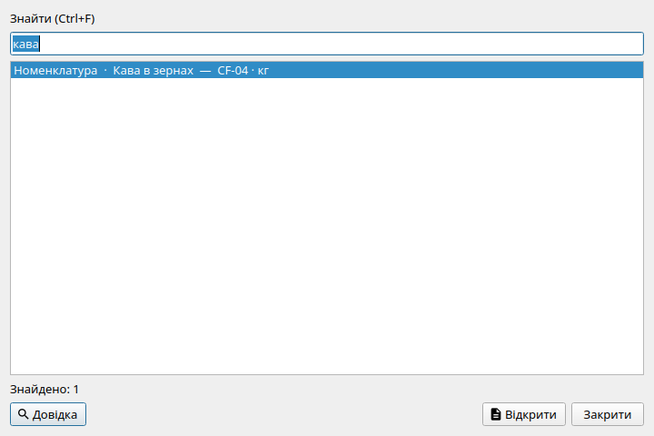

Глобальний пошук (Ctrl+F) шукає документи, контрагентів, номенклатуру, рахунки, ОЗ/НМА/МШП і працівників в одному рядку (від 2 символів).

Вікно глобального пошуку: рядок введення, таблиця результатів по всіх реєстрах та кнопка переходу до знайденого об'єкта.| Реєстр | Пошукові поля (що шукається) |
|---|---|
| Документи | Номер документа, дата, найменування контрагента, зміст та коментар рядків, сума. |
| Контрагенти | Офіційне найменування організації, скорочена назва, ЄДРПОУ (код), IBAN, банк. |
| Номенклатура | Назва товару або послуги, одиниця виміру, артикул. |
| Рахунки обліку | Код рахунку (наприклад, «301»), назва субрахунку («Готівка в касі»). |
| Основні засоби | Інвентарний номер, найменування об'єкта ОЗ, серійний номер. |
| Нематеріальні активи | Інвентарний номер НМА, назва ліцензії або права. |
| МШП | Назва малоцінного предмета, інвентарний номер картки. |
| Працівники | Прізвище, ім'я, по батькові, РНОКПП (податковий номер). |